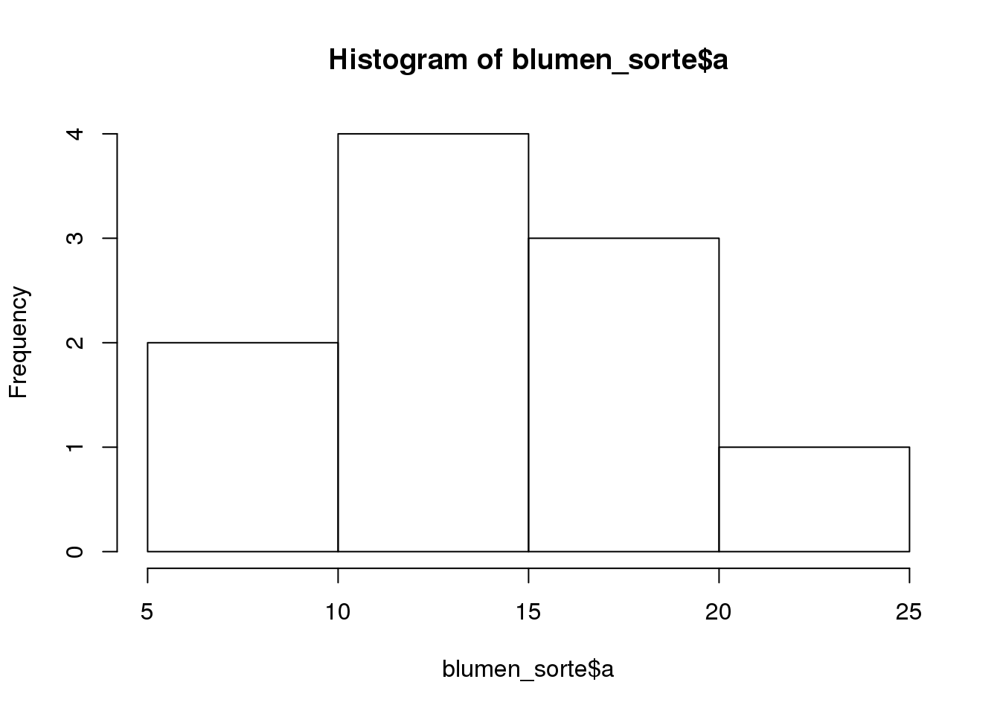
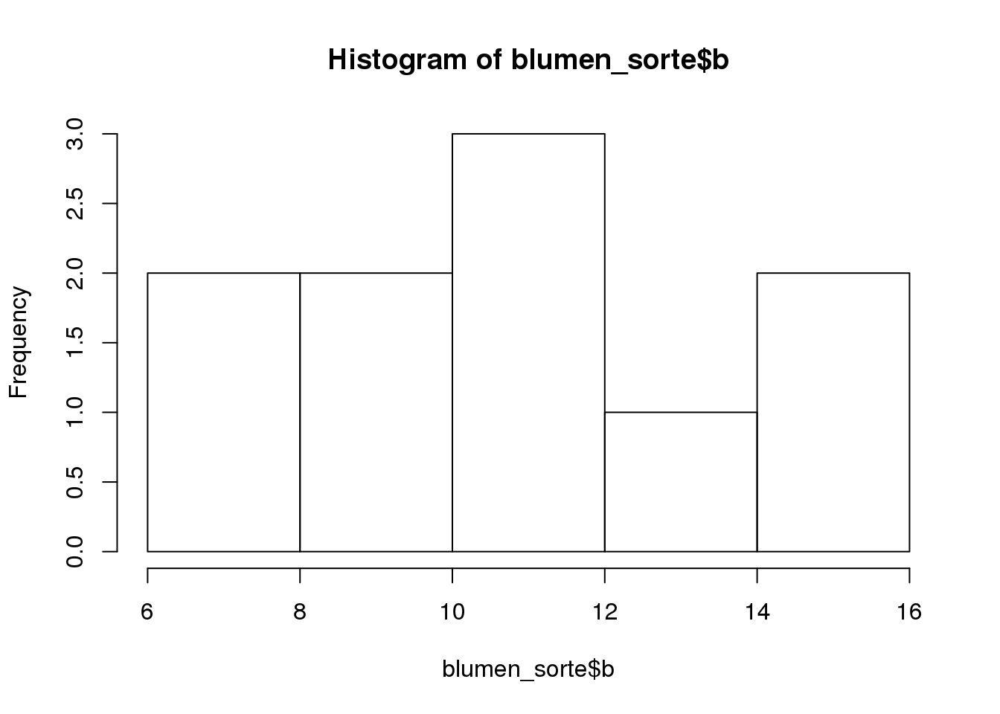
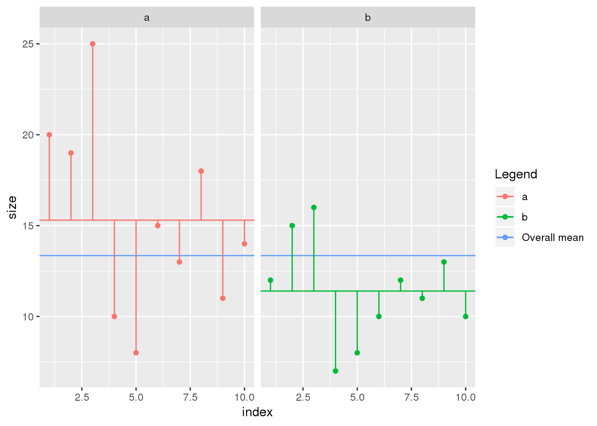

2.2 t-Test (mit Blumen)
blumen_sorte <- data.frame(
a = c(20, 19, 25, 10, 8, 15, 13, 18, 11, 14),
b = c(12, 15, 16, 7, 8, 10, 12, 11, 13, 10)
)2.2.0.1 Student’s t-Test für zwei unabhängige Proben
t.test(blumen_sorte$a,blumen_sorte$b,var.equal = T)##
## Two Sample t-test
##
## data: blumen_sorte$a and blumen_sorte$b
## t = 2.0797, df = 18, p-value = 0.05212
## alternative hypothesis: true difference in means is not equal to 0
## 95 percent confidence interval:
## -0.03981237 7.83981237
## sample estimates:
## mean of x mean of y
## 15.3 11.42.2.0.2 Welch’s t-test für zwei unabhängige Proben
t.test(blumen_sorte$a,blumen_sorte$b,var.equal = F)##
## Welch Two Sample t-test
##
## data: blumen_sorte$a and blumen_sorte$b
## t = 2.0797, df = 13.907, p-value = 0.05654
## alternative hypothesis: true difference in means is not equal to 0
## 95 percent confidence interval:
## -0.1245926 7.9245926
## sample estimates:
## mean of x mean of y
## 15.3 11.4t.test(blumen_sorte$a,blumen_sorte$b)##
## Welch Two Sample t-test
##
## data: blumen_sorte$a and blumen_sorte$b
## t = 2.0797, df = 13.907, p-value = 0.05654
## alternative hypothesis: true difference in means is not equal to 0
## 95 percent confidence interval:
## -0.1245926 7.9245926
## sample estimates:
## mean of x mean of y
## 15.3 11.42.2.1 Einseitig vs. zweiseitiger t-Test
t.test(blumen_sorte$a,blumen_sorte$b) # Zweiseitig##
## Welch Two Sample t-test
##
## data: blumen_sorte$a and blumen_sorte$b
## t = 2.0797, df = 13.907, p-value = 0.05654
## alternative hypothesis: true difference in means is not equal to 0
## 95 percent confidence interval:
## -0.1245926 7.9245926
## sample estimates:
## mean of x mean of y
## 15.3 11.4t.test(blumen_sorte$a,blumen_sorte$b,alternative = "greater") # Zweiseitig##
## Welch Two Sample t-test
##
## data: blumen_sorte$a and blumen_sorte$b
## t = 2.0797, df = 13.907, p-value = 0.02827
## alternative hypothesis: true difference in means is greater than 0
## 95 percent confidence interval:
## 0.5954947 Inf
## sample estimates:
## mean of x mean of y
## 15.3 11.4t.test(blumen_sorte$a,blumen_sorte$b, alternative = "less") # Zweiseitig##
## Welch Two Sample t-test
##
## data: blumen_sorte$a and blumen_sorte$b
## t = 2.0797, df = 13.907, p-value = 0.9717
## alternative hypothesis: true difference in means is less than 0
## 95 percent confidence interval:
## -Inf 7.204505
## sample estimates:
## mean of x mean of y
## 15.3 11.42.2.2 Gepaarter t-Test
blumen_jahr <- data.frame(
jahr1 = c(20, 19, 25, 10, 8, 15, 13, 18, 11, 14),
jahr2 = c(12, 15, 16, 7, 8, 10, 12, 11, 13, 10)
)
testRes <- t.test(blumen_jahr$jahr1,blumen_jahr$jahr2, paired=T) #gepaarter t-Test
testRes##
## Paired t-test
##
## data: blumen_jahr$jahr1 and blumen_jahr$jahr2
## t = 3.4821, df = 9, p-value = 0.006916
## alternative hypothesis: true difference in means is not equal to 0
## 95 percent confidence interval:
## 1.366339 6.433661
## sample estimates:
## mean of the differences
## 3.9knitr::kable(broom::tidy(testRes))| estimate | statistic | p.value | parameter | conf.low | conf.high | method | alternative |
|---|---|---|---|---|---|---|---|
| 3.9 | 3.482081 | 0.0069158 | 9 | 1.366339 | 6.433661 | Paired t-test | two.sided |
2.2.2.1 Parametrische vs. nicht-parametrische Verfahren
2.2.3 Klassische Tests für Normalität
shapiro.test(blumen_sorte$a)##
## Shapiro-Wilk normality test
##
## data: blumen_sorte$a
## W = 0.97304, p-value = 0.91752.2.4 Klassische Tests für Varianzhomogenität
var.test(blumen_sorte$a,blumen_sorte$b)##
## F test to compare two variances
##
## data: blumen_sorte$a and blumen_sorte$b
## F = 3.3715, num df = 9, denom df = 9, p-value = 0.08467
## alternative hypothesis: true ratio of variances is not equal to 1
## 95 percent confidence interval:
## 0.8374446 13.5738284
## sample estimates:
## ratio of variances
## 3.371547library(car)## Loading required package: carDataleveneTest(blumen_sorte$a,blumen_sorte$b,center=mean)## Warning in leveneTest.default(blumen_sorte$a, blumen_sorte$b, center =
## mean): blumen_sorte$b coerced to factor.## Warning in anova.lm(lm(resp ~ group)): ANOVA F-tests on an essentially
## perfect fit are unreliable## Levene's Test for Homogeneity of Variance (center = mean)
## Df F value Pr(>F)
## group 7 3.0148e+30 < 2.2e-16 ***
## 2
## ---
## Signif. codes: 0 '***' 0.001 '**' 0.01 '*' 0.05 '.' 0.1 ' ' 12.2.5 Visuelle Inspektion der Daten
boxplot(blumen_sorte$a,blumen_sorte$b)
hist(blumen_sorte$a)
hist(blumen_sorte$b)
2.2.6 “Nicht-parametrische” Verfahren (äquivalent zu t-Test)
wilcox.test(blumen_sorte$a,blumen_sorte$b)## Warning in wilcox.test.default(blumen_sorte$a, blumen_sorte$b): cannot
## compute exact p-value with ties##
## Wilcoxon rank sum test with continuity correction
##
## data: blumen_sorte$a and blumen_sorte$b
## W = 73, p-value = 0.08789
## alternative hypothesis: true location shift is not equal to 02.2.7 Randomisierungs-t-Test
#siehe R-code im praktischen TeilRcode noch einfügen
2.2.8 Transformationen
R Code noch einfügen
2.2.8.1 Anova
library(tidyverse)## ── Attaching packages ─────────────────────────────────────────────────────────────────────────────────── tidyverse 1.2.1 ──## ✔ ggplot2 3.0.0 ✔ readr 1.1.1
## ✔ tibble 1.4.2 ✔ purrr 0.2.5
## ✔ tidyr 0.8.1 ✔ dplyr 0.7.6
## ✔ ggplot2 3.0.0 ✔ forcats 0.3.0## ── Conflicts ────────────────────────────────────────────────────────────────────────────────────── tidyverse_conflicts() ──
## ✖ dplyr::filter() masks stats::filter()
## ✖ dplyr::lag() masks stats::lag()
## ✖ dplyr::recode() masks car::recode()
## ✖ purrr::some() masks car::some()blumen_long <- blumen_sorte %>%
gather(cultivar,size)
blumen_long %>%
group_by(cultivar) %>%
mutate(index = row_number()) %>%
mutate(group_mean = mean(size)) %>%
ungroup() %>%
mutate(overall_mean = mean(size)) %>%
ggplot(aes(colour = cultivar)) +
geom_point(aes(index,size)) +
geom_hline(aes(colour = cultivar,yintercept = group_mean)) +
geom_hline(aes(colour = "Overall mean",yintercept = overall_mean)) +
facet_grid(~cultivar) +
labs(colour = "Legend") +
geom_segment(aes(x = index,y = size,xend = index, yend = group_mean))
2.2.9 normaler t-Test
t.test(size~cultivar, blumen_long, var.equal=T)##
## Two Sample t-test
##
## data: size by cultivar
## t = 2.0797, df = 18, p-value = 0.05212
## alternative hypothesis: true difference in means is not equal to 0
## 95 percent confidence interval:
## -0.03981237 7.83981237
## sample estimates:
## mean in group a mean in group b
## 15.3 11.42.2.10 als ANOVA
summary(aov(size~cultivar,blumen_long))## Df Sum Sq Mean Sq F value Pr(>F)
## cultivar 1 76.0 76.05 4.325 0.0521 .
## Residuals 18 316.5 17.58
## ---
## Signif. codes: 0 '***' 0.001 '**' 0.01 '*' 0.05 '.' 0.1 ' ' 12.2.11 Zum Abschluss eine “echte” ANOVA mit drei Sorten
set.seed(1)
sorteC <- data.frame(cultivar = rep("c",10),size = as.integer(rnorm(10,17,5)),stringsAsFactors = F)
blumen_long <- bind_rows(blumen_long,sorteC)
summary(aov(size~cultivar,blumen_long))## Df Sum Sq Mean Sq F value Pr(>F)
## cultivar 2 160.1 80.03 4.766 0.0169 *
## Residuals 27 453.4 16.79
## ---
## Signif. codes: 0 '***' 0.001 '**' 0.01 '*' 0.05 '.' 0.1 ' ' 1